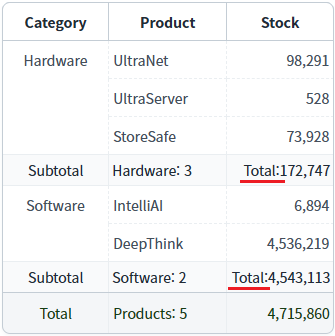
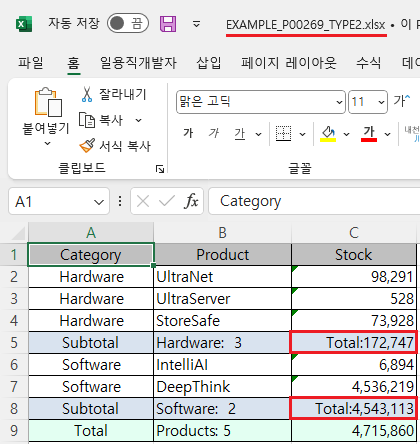

GridView의 'advancedExcelDownload' 메소드의 첫 번째 인자인 JSON 객체의 'useSubTotalData'를 사용하여, 엑셀 다운로드 시 서브토탈(subTotal) 데이터를 브라우저에 표시된 데이터로 사용하도록 설정한 예제입니다.
'useSubTotalData' 속성은 엑셀 파일에 'subTotal'(소계)의 데이터를 브라우저에 표시된 값으로 출력할지 여부를 결정합니다. 'subTotal' 컬럼의 표현식('expression' 속성)에 사용자 정의 메소드가 설정된 경우, 이 속성의 값이 'false'이면 엑셀 파일 생성 중 오류가 발생합니다.
엑셀 다운로드 - 기본 동작
엑셀 다운로드 - subTotal의 값을 브라우저에 표시된 값으로 출력하기
1
STEP 1: 초기 상태 확인하기
GridView에 서브토탈(소계)가 적용되어 있습니다. 'Stock' 컬럼의 소계 영역 값은 "Total: " 문자열과 컬럼의 합산 금액에 "#,###" 서식이 적용되어 표시되었습니다. 이 값은 컬럼의 'expression' 속성에서 사용자 정의 메소드를 호출해 생성되었습니다.
Image 1.브라우저(Chrome) 실행 예시

2
STEP 2: 버튼 '엑셀 다운로드 - 기본 동작'를 클릭합니다.
엑셀 파일이 다운로드되지 않고 서버에서 오류 메시지가 전달됩니다. 영역 '로그 확인'에 출력된 로그를 확인합니다. (브라우저의 개발자 도구 콘솔에도 로그가 출력되며, 반환된 객체를 확인할 수 있습니다.)
Example 1.Log
[03:23:35] 엑셀 다운로드 오류 발생 : [D301]Excel 생성도중 오류
1
STEP 1: 초기 상태 확인하기
GridView에 서브토탈(소계)가 적용되어 있습니다. 'Stock' 컬럼의 소계 영역 값은 "Total: " 문자열과 컬럼의 합산 금액에 "#,###" 서식이 적용되어 표시되었습니다. 이 값은 컬럼의 'expression' 속성에서 사용자 정의 메소드를 호출해 생성되었습니다.
Image 2.브라우저(Chrome) 실행 예시
2
STEP 2: 버튼 '엑셀 다운로드 - subTotal의 값을 브라우저에 표시된 값으로 출력하기'를 클릭합니다.
'EXAMPLE_P00269_TYPE2.xlsx' 파일이 다운로드 됩니다.
3
STEP 3: 실행된 결과를 확인합니다.
다운로드 된 'EXAMPLE_P00269_TYPE2.xlsx' 파일을 실행합니다. 서브토탈 영역의 출력 값을 확인합니다. 브라우저에 표시된 값과 동일하게 출력됩니다.
Image 3.다운로드된 엑셀(2021) 파일 예시

GridView의 'advancedExcelDownload' 메소드를 사용하여 스크립트를 작성합니다.
[필수] options.fileName
<String:Y> 파일명
[필수] options.useSubTotal
<String:N> [default: false, true] 다운로드시 SubTotal을 출력 할지 여부 ("true"인경우 출력, "false"인경우 미출력), expression을 지정한 경우 avg,sum,min,max,targetColValue,숫자를 지원 함.
[필수] options.useSubTotalData
<String:N> [default: 없음] 기본은 서버에서 계산된 결과를 출력하지만 useSubTotalData="true"시 브라우저에 출력된 subTotal 데이터를 출력함.
[선택] options.useXHR
<String:N> [default: false, true] XHR 방식으로 서버에 전송할지의 유무. true로 지정하지 않으면 Form Submit방식으로 데이터를 전송합니다. 서버에서 엑셀 생성 중 오류가 발생하여 오류 코드를 전달한 경우 옵션 'onFailureCallback'에서 후처리를 위해 true로 설정.
[선택] options.onFailureCallback
<Function:N> [default: 없음] 요청 실패 시 호출할 callback 메소드.
Example 2.Script
//예제 파일의 스크립트 "scwin.btn_ex2_onclick"를 참고하세요. var jsnOptions = { fileName: "EXAMPLE_P00269_TYPE2.xlsx", // [필수] 엑셀의 파일명 useSubTotal: "true", // [필수] subTotal 표시 useSubTotalData: "true", // [필수] subTotal의 값을 브라우저에 표시된 값으로 출력하기 useXHR: "true", // 서버에서 엑셀 생성 중 오류가 발생하여 오류 코드를 전달한 경우 옵션 'onFailureCallback'에서 후처리를 위한 설정. onFailureCallback: scwin.avExcelDownload_error_callback // 서버에서 엑셀 생성 중 오류가 발생한 경우 후처리 메소드. 옵션 'useXHR'이 true로 지정되어야 사용할 수 있습니다. }; // GridView "grd_exam1"의 엑셀 다운로드 실행 grd_exam1.advancedExcelDownload(jsnOptions);
Example 3.Script
// options.onFailureCallback 메소드 정의 예시 //@param {string} arg1 Request URL //@param {object} arg2 엑셀 생성 중 오류 정보가 담긴 JSON 객체. //@param {string} arg2.errorCode 오류 코드 scwin.avExcelDownload_error_callback = function (arg1, arg2) { // arg1 값 예시) '/websquare/xmlToExcel2.wq' // arg2 값 예시) {errorCode: 'D301'} // 로직 작성 };
advancedExcelDownload( options , infoArr )
options.fileName
options.useSubTotal
options.useSubTotalData
options.useXHR
options.onFailureCallback